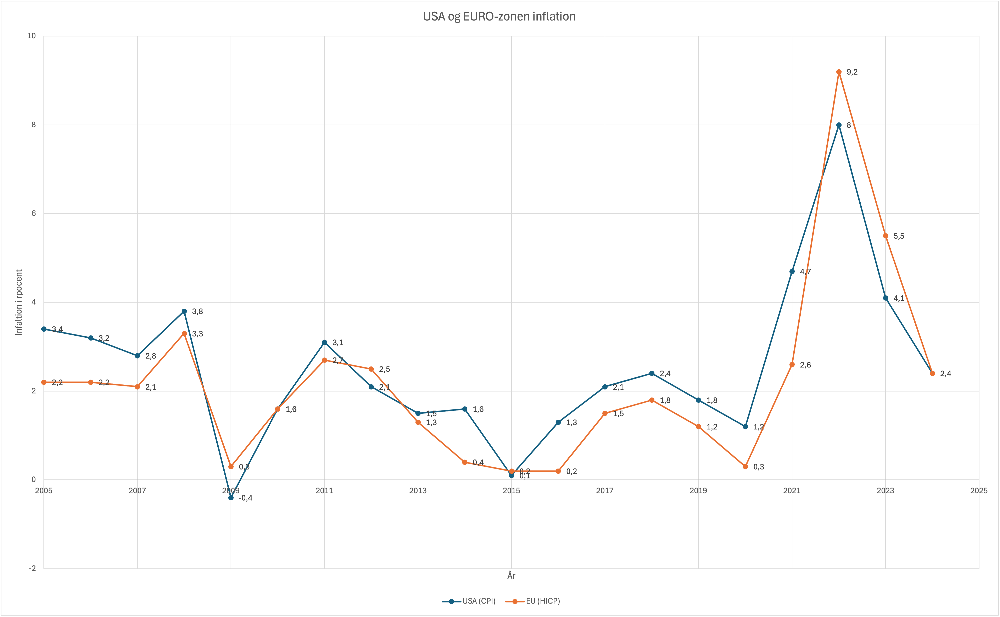
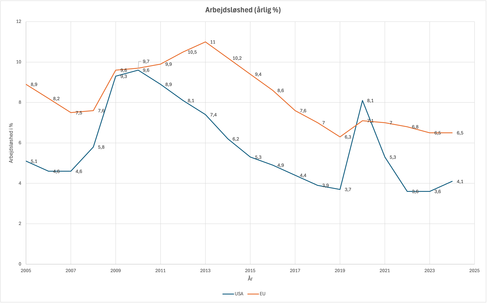

Formål: Kapitler til denne uge: Kommenter kort niveauer og forskelle i ovenstående prognoser for 2026 nøgletal.
Private forbrug, realvækst pct.:
Offentligt forbrug, realvækst pct.:
Eksport, realvækst pct.:
BNP, realvækst pct.:
Inflation, pct.:
Ledighedsprocent, andel af arbejdsstyrke:
Offentlig gæld, pct. af BNP:
Centralbankens rente, pct.:
USA's økonomi forventes at klare sig bedre end Eurozonens i 2026, med højere vækst i forbrug, investeringer og eksport. Eurozonen står over for udfordringer med lav vækst og høj ledighed, mens USA har et stærkt arbejdsmarked og højere inflation. Begge regioner har dog høj offentlig gæld, hvilket kan blive en udfordring i fremtiden.
Kommenter kort på nedenstående figur der viser inflation for USA og Euro-området, inddrag gerne vigtige historiske begivenheder i analysen. 
2005–2008: Før finanskrisen
2009–2012: Finanskrisen og eurokrisen
2013–2019: Lav inflation og "ny normal"
2020–2021: COVID-19 og lockdowns
2022–2023: Energikrise og krig i Ukraine
2024: Normalisering? Kommenter kort på nedenstående figur der viser arbejdsløsheden for USA og Euro-området, inddrag gerne vigtige historiske begivenheder i analysen. 
2005–2008: Før finanskrisen – lav arbejdsløshed i USA, højere i EU
2009–2012: Finanskrisen rammer hårdt – jobløshed eksploderer
2013–2019: Langsom bedring – men EU halter bagud
2020–2021: COVID-19 lukker verden ned – jobkrise igen
2022–2024: USA kommer hurtigt tilbage – EU kæmper med energikrise
Aktivitet
Løsningsforslag
USA og Euro-zonen
At forstå hvordan makroøkonomien fungerer
Anslået tidsforbrug:
5 timer
Forudsætning:
Opgave:
Besvar spørgsmålene, upload i Workshop inden deadline.
Her kan du se undervisers løsningsforslag og sammenligne med din egen opgave, din sammenligning er til dit
eget brug.
Feedback:
Feedfruits
Bemærk Workshop opgaven er ikke obligatorisk.
Spørgsmål 1
Økonomiske nøgletal (prognoser) for Euro-området og USA (2026)
Økonomisk nøgletal
Euro-området
USA
Private forbrug, realvækst pct.
0,7
2,5
Offentligt forbrug, realvækst pct.
0,6
0,9
Eksport, realvækst pct.
1,0
2,2
BNP, realvækst pct.
0,8
2,5
Inflation, pct.
2,1
2,4
Ledighedsprocent, andel af arbejdsstyrke
6,5
4,2
Offentlig gæld, pct. af BNP
94
125
Centralbankens rente, pct.
1,75
3,25-3,5
Kommentar til økonomiske prognoser for 2026: USA vs. EU
- EU: 0,7 % vækst i privat forbrug betyder, at folk i Eurozonen forventes at bruge lidt flere penge end i år, men væksten er lav. Dette kan skyldes usikkerhed om fremtiden eller høje priser på varer og tjenester.
- USA: 2,5 % vækst i privat forbrug viser, at amerikanerne forventes at bruge markant flere penge. Dette skyldes sandsynligvis et stærkt arbejdsmarked og højere tillid til økonomien.
- EU: 0,6 % vækst i offentligt forbrug betyder, at regeringerne i Eurozonen forventes at øge deres udgifter lidt, men ikke meget. Dette kan skyldes begrænsede offentlige budgetter.
- USA: 0,9 % vækst i offentligt forbrug viser, at den amerikanske regering også forventes at øge udgifterne lidt, men mere end i EU.
- EU: 1,0 % vækst i eksporten betyder, at Eurozonen forventes at sælge lidt flere varer og tjenester til andre lande. Dette kan skyldes en svag global efterspørgsel.
- USA: 2,2 % vækst i eksporten viser, at USA forventes at sælge markant flere varer og tjenester til udlandet. Dette skyldes sandsynligvis en stærk global efterspørgsel efter amerikanske produkter.
- EU: 0,8 % vækst i BNP (Bruttonationalproduktet) betyder, at Eurozonens økonomi forventes at vokse meget lidt. Dette kan skyldes lav forbrugsvækst og svage investeringer.
- USA: 2,5 % vækst i BNP viser, at den amerikanske økonomi forventes at vokse meget mere end Eurozonens. Dette skyldes stærkt forbrug, investeringer og eksport.
- EU: 2,1 % inflation betyder, at priserne i Eurozonen forventes at stige lidt. Dette er tæt på ECB's mål på 2 % og afspejler en stabil økonomi.
- USA: 2,4 % inflation betyder, at priserne i USA forventes at stige lidt mere end i EU. Dette kan skyldes stærk efterspørgsel og højere lønninger.
- EU: 6,5 % ledighed betyder, at omkring 6,5 % af arbejdsstyrken i Eurozonen forventes at være uden job. Dette er højere end i USA og afspejler udfordringer på arbejdsmarkedet.
- USA: 4,2 % ledighed betyder, at færre amerikanere forventes at være uden job. Dette viser et stærkt arbejdsmarked med mange jobmuligheder.
- EU: 94 % offentlig gæld betyder, at Eurozonens lande sammenlagt skylder 94 % af deres samlede økonomi (BNP). Dette er højt, men lavere end i USA.
- USA: 125 % offentlig gæld betyder, at den amerikanske regering skylder mere end hele landets økonomi kan producere på et år.
Dette er meget højt og kan blive en udfordring i fremtiden.
- EU: 1,75 % rente betyder, at det er relativt billigt at låne penge i Eurozonen. Dette skal hjælpe økonomien med at vokse.
- USA: 3,25-3,5 % rente betyder, at det er dyrere at låne penge i USA. Dette skyldes, at Federal Reserve forsøger at holde inflationen under kontrol.
Konklusion
Spørgsmål 2
Inflation i USA og EU: Historisk perspektiv (2005–2024)
I årene før finanskrisen i 2008 var inflationen stabil i både USA (3–4 %) og EU (2–3 %). Priserne steg roligt, og økonomien var sund. Men i 2008 sprængte "boligboblen" i USA, hvilket startede en global finanskrise. Dette skabte panik, og inflationen i USA toppede på 3,8 %, mens EU nåede 3,3 % pga. høje energipriser.
Efter finanskrisen i 2008 faldt inflationen kraftigt. I 2009 oplevede USA endda negativ inflation (-0,4 %), fordi folk stoppede med at købe varer, og priserne faldt. I EU ramte "eurokrisen" (2010–2012) lande som Grækenland og Spanien hårdt. Inflationen i EU faldt til under 2 %, fordi økonomien var svækket, og arbejdsløsheden steg.
I denne periode var inflationen meget lav i både USA og EU (oftest under 2 %). Centralbankerne holdt renterne nede for at redde økonomien, men priserne steg kun lidt. Mange troede, at høj inflation var "død" – indtil COVID-19 kom.
Under pandemien i 2020 faldt inflationen igen (USA: 1,2 %, EU: 0,3 %), fordi butikker og fabrikker lukkede, og folk brugte færre penge. Men da lockdowns sluttede i 2021, eksploderede efterspørgslen. Pludselig var der mangel på computerchips, containere og energi – og priserne skød i vejret. I USA steg inflationen til 4,7 %, mens EU nåede 2,6 %.
I 2022 invaderede Rusland Ukraine, hvilket sendte energipriser (især gas) til vejrs i EU. Inflationen i EU nåede et rekordhøjt 9,2 %, mens USA toppede på 8,0 %. I 2023 begyndte priserne at falde igen, men EU kæmpede stadig med høj inflation (5,5 %) på grund af dyre energi- og fødevarepriser.
I 2024 forventes inflationen at falde til omkring 2,4 % i både USA og EU. Centralbankerne har hævet renterne for at bremse prisstigninger, og energimarkederne er blevet mere stabile. Men økonomien er ikke helt "normal" endnu – især EU er sårbart over for nye kriser.
Hvorfor er inflationen forskellig i USA og EU?
Spørgsmål 3
Arbejdsløshed i USA og EU: Historisk perspektiv (2005–2024)
Før finanskrisen i 2008 havde USA en lav arbejdsløshed på omkring 4–5 %, mens EU lå på 7–9 %. EU's højere tal skyldtes bl.a. stive arbejdsmarkeder og høj ungarbejdsløshed i lande som Spanien og Grækenland. Men begge regioner havde relativt stabile jobmarkeder.
Da boligboblen i USA sprængte i 2008, mistede millioner af amerikanere deres job. Arbejdsløsheden i USA peakede på 9,6 % i 2010. I EU forværrede finanskrisen "eurokrisen" (2010–2012), hvor lande som Grækenland og Spanien så arbejdsløsheden stige til over 25 % for unge. EU som helhed nåede 10,5 % arbejdsløshed i 2012.
Efter finanskrisen skabte USA hurtigt nye jobs (især i tech og service), og arbejdsløsheden faldt til under 4 % i 2019. I EU tog det længere tid – især Sydøsteuropa kæmpede med høj arbejdsløshed. EU som helhed nåede dog ned på 6–7 %, takket være reformer og øget vækst.
Da COVID-19 ramte i 2020, lukkede butikker, restauranter og fabrikker over hele verden. Arbejdsløsheden i USA skød op på 8,1 %, mens EU "kun" steg til 7,1 %. Men dette skjuler en vigtig forskel: I USA mistede mange midlertidigt deres job, mens EU-lande brugte ordninger som "korttidsarbejde" til at beskytte jobs.
I 2022 faldt USA's arbejdsløshed tilbage til 3,6 % – næsten rekordlavt – takket være en hurtig genåbning og stærk forbrugerefterspørgsel. I EU steg arbejdsløsheden dog igen i 2022–2023 på grund af energikrisen (efter Ruslands invasion af Ukraine), der ramte industrien hårdt. EU nåede ned på 6,5 % i 2024, men det er stadig dobbelt så højt som i USA.
Hvorfor er arbejdsløsheden altid højere i EU?